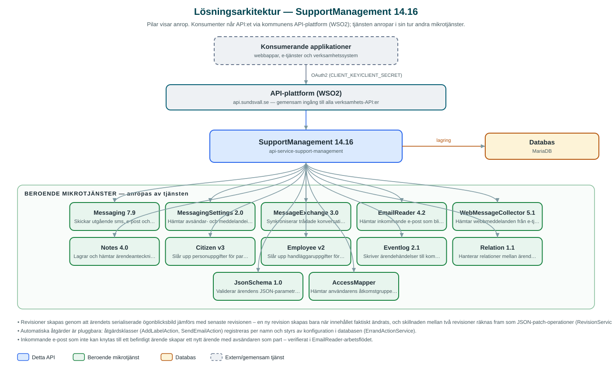

SupportManagement
Ärendehanterings-API för supportärenden – skapar, uppdaterar och följer upp ärenden med kommunikation, revisioner och notifieringar åt kommunens kontaktcenter och verksamhetssystem.
Om API:et
SupportManagement är motorn bakom kommunens hantering av supportärenden. API:et lagrar ärenden med klassificering, parter, prioritet, bilagor och parametrar, uppdelat per kommun och namnrymd (namespace) så att flera verksamheter kan använda samma tjänst med egna kategorier, statusar, roller och etiketter – all denna metadata administreras via API:et.
Kommunikationen i ett ärende samlas på ett ställe: utgående sms, e-post och webbmeddelanden skickas via Messaging, trådade konversationer synkroniseras mot MessageExchange, och schemalagda jobb hämtar in inkommande e-post via EmailReader och webbmeddelanden via WebMessageCollector och knyter dem till rätt ärende – inkommande e-post kan även skapa helt nya ärenden.
Varje ändring av ett ärende eller en anteckning sparas som en revision, och API:et kan räkna fram skillnaden mellan två valfria revisioner. Därtill finns händelseloggning via Eventlog, notifieringar till handläggare och prenumeranter, tidmätning per fas samt konfigurerbara automatiska åtgärder som utförs på ärenden.
Det här gör API:et
- Ärendehantering per namnrymd – CRUD för supportärenden med klassificering, parter, prioritet, bilagor och parametrar – uppdelat per kommun och namnrymd.
- Konfigurerbar metadata – Kategorier, statusar, faser, roller, etiketter, kontaktorsaker och externa id-typer administreras per namnrymd via API:et.
- Samlad ärendekommunikation – Utgående sms, e-post och webbmeddelanden via Messaging samt trådade konversationer via MessageExchange – allt kopplat till ärendet.
- Automatisk insamling av inkommande post – Schemalagda jobb hämtar inkommande e-post och webbmeddelanden; inkommande e-post kan skapa nya ärenden automatiskt.
- Revisioner med diff – Varje ändring av ärenden och anteckningar sparas som revision, och skillnaden mellan två revisioner kan hämtas som JSON-patch-operationer.
- Notifieringar och prenumerationer – Notifieringar till handläggare och prenumeranter på ärenden, med schemalagd utskickshantering och daglig rensning.
- Automatiska åtgärder och tidmätning – Konfigurerbara åtgärder (t.ex. sätta etikett eller skicka e-post) körs schemalagt på ärenden, och handläggningstid mäts per fas.
API-dokumentation
API:ets samtliga resurser, parametrar och datamodeller finns beskrivna i en OpenAPI-specifikation som är hämtad ur källkodsförrådet. Den kan utforskas interaktivt i Swagger UI eller laddas ner som YAML.
Teknisk dokumentation
Nedan beskrivs hur tjänsten är uppbyggd, vilka andra tjänster den anropar och vad som krävs för att driftsätta den. Informationen är härledd ur källkoden och dess konfiguration på GitHub.
Arkitektur

API:et är en mikrotjänst (Java 25, Spring Boot via kommunens gemensamma tjänsteplattform dept44 (8.0.8), byggd med Maven). Konsumenter når tjänsten via kommunens gemensamma API-plattform (WSO2) på api.sundsvall.se – tjänsten anropas aldrig direkt. Tjänsten anropar i sin tur andra mikrotjänster i kommunens tjänstelandskap. Lagring: MariaDB med Flyway-migrationer; ärenden, kommunikation, revisioner, metadata och notifieringar lagras per kommun och namnrymd.
Teknikstack
- Språk: Java 25
- Ramverk: Spring Boot via kommunens gemensamma tjänsteplattform dept44 (8.0.8), byggd med Maven
- Databas: MariaDB med Flyway-migrationer; ärenden, kommunikation, revisioner, metadata och notifieringar lagras per kommun och namnrymd
- Övrigt: Schemalagda jobb med Shedlock-låsning, Resilience4j (circuit breakers), Feign-klienter, cachning av åtkomstgrupper, JSON-diff (zjsonpatch) för revisionsjämförelser
Beroenden till andra mikrotjänster
Tjänsten anropar följande mikrotjänster. Versionerna är hämtade ur källkodens integrationsklienter.
| Tjänst | Version | Användning |
|---|---|---|
| Messaging | 7.9 | Skickar utgående sms, e-post och webbmeddelanden i ärendekommunikationen. |
| MessagingSettings | 2.0 | Hämtar avsändar- och meddelandeinställningar för utskick. |
| MessageExchange | 3.0 | Synkroniserar trådade konversationer kopplade till ärenden. |
| EmailReader | 4.2 | Hämtar inkommande e-post som blir kommunikation eller nya ärenden. |
| WebMessageCollector | 5.1 | Hämtar webbmeddelanden från e-tjänsteplattformen via schemalagt jobb. |
| Notes | 4.0 | Lagrar och hämtar ärendeanteckningar. |
| Citizen | v3 | Slår upp personuppgifter för parter i ärendekommunikationen. |
| Employee | v2 | Slår upp handläggaruppgifter för notifieringar. |
| Eventlog | 2.1 | Skriver ärendehändelser till kommunens centrala händelselogg. |
| Relation | 1.1 | Hanterar relationer mellan ärenden. |
| JsonSchema | 1.0 | Validerar ärendens JSON-parametrar mot scheman. |
| AccessMapper | – | Hämtar användarens åtkomstgrupper för behörighetsstyrning av etiketter. |
Konfiguration och driftsättning
- application.yml med base-url och OAuth2-klientuppgifter (client-id/client-secret) för samtliga tolv beroende mikrotjänster
- MariaDB-anslutning; databasschemat versionshanteras med Flyway
- Cron-uttryck och Shedlock-låstider för åtta schemalagda jobb (e-post, webbmeddelanden, konversationer, åtgärder, notifieringar, suspensioner, bilage-hashar med flera)
- E-post- och message-exchange-integrationen konfigureras per namnrymd via API:ets konfigurationsendpoints
- Anrop görs per kommun och namnrymd – municipalityId och namespace ingår i alla API-vägar
Noterbart ur källkoden
- Revisioner skapas genom att ärendets serialiserade ögonblicksbild jämförs med senaste revisionen – en ny revision skapas bara när innehållet faktiskt ändrats, och skillnaden mellan två revisioner räknas fram som JSON-patch-operationer (RevisionService).
- Automatiska åtgärder är pluggbara: åtgärdsklasser (AddLabelAction, SendEmailAction) registreras per namn och styrs av konfiguration i databasen (ErrandActionService).
- Inkommande e-post som inte kan knytas till ett befintligt ärende skapar ett nytt ärende med avsändaren som part – verifierat i EmailReader-arbetsflödet.
- Ett nattligt jobb beräknar hashar för bilagor, och behöriga etiketter per användare hämtas via AccessMapper och cachas (accessibleLabelsCache).
Källkod
Källkoden är öppen och finns hos Sundsvalls kommun på GitHub. I källkodsförrådet finns även instruktioner för att klona, konfigurera och starta tjänsten i egen miljö.